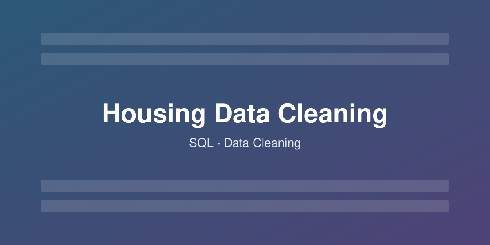
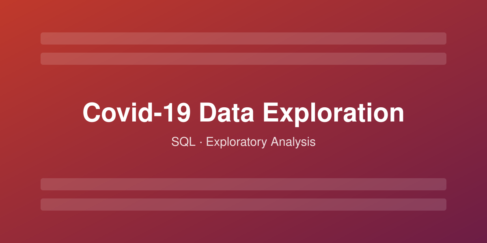
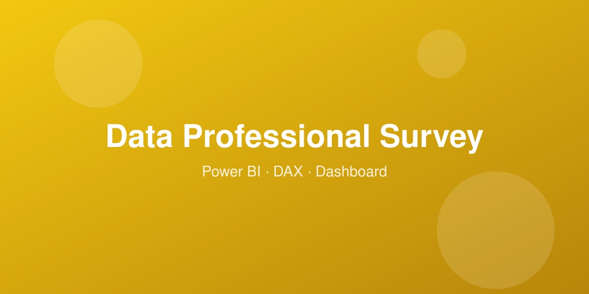
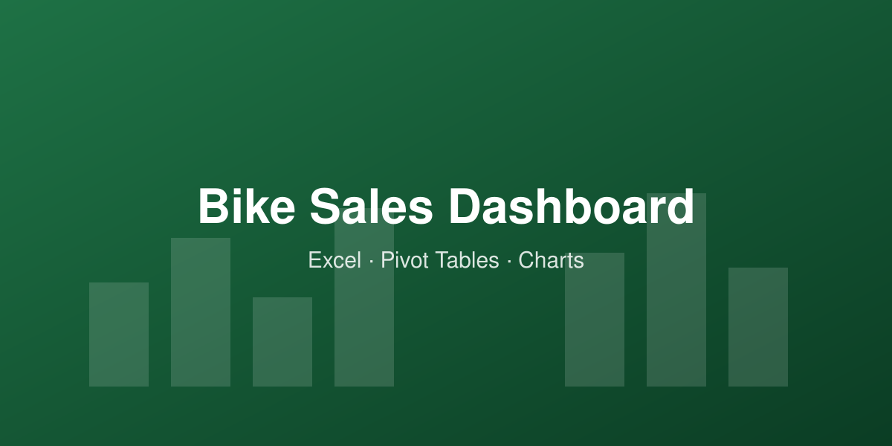
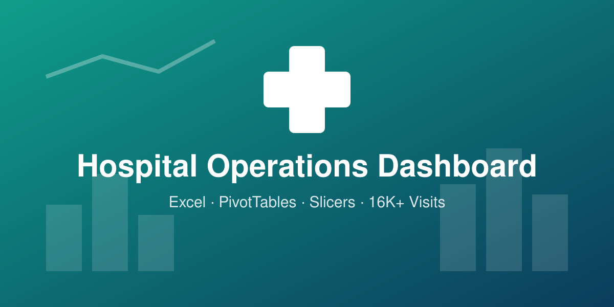

Data Cleaning in SQL
Cleaning and standardizing a housing dataset in SQL Server.

Data Analyst skilled in Power BI, SQL, Excel and Python.
@Kareem Santawy
Cleaning and standardizing a housing dataset in SQL Server.


Exploratory analysis of the Covid-19 dataset in SQL Server.

An interactive Power BI dashboard analyzing a survey of data professionals. It looks at who works in the field, what they earn, which tools they prefer, and how satisfied they are in their roles.

An Excel analysis of 1,000 customer records from a bike retailer, built to find out which customer profiles are most likely to buy a bike. I cleaned the raw data (removed 26 duplicate records, standardized codes like M/F and M/S into Male/Female and Married/Single), added an age-bracket column with a nested IF formula, and summarized the results with PivotTables and charts on an interactive dashboard with slicers for Marital Status, Education and Region.

An Excel analysis of 16,362 patient visits (2023–2026) across the branches of HealthPlus Medical Center. Built with structured tables, COUNTIFS/AVERAGEIFS formulas and PivotTables, and presented on a three-page dashboard with 19 charts covering branch performance, wait times, patient satisfaction, readmission rates, doctor workload and monthly trends.